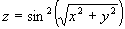
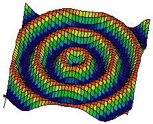
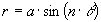
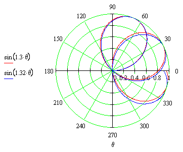
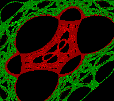

Real-Time
Features
Departments
Csound Meets Keykit
Hans Mikelson
rterrain.orc rterrain.sco csm.bat hopalong.k ffscale.k
Meet Keykit
Keykit is a programming language and performance GUI for MIDI events. In some ways Keykit is much like Csound since it is a programming language, it is freely distributed, it is cross-platform and it is used for music. Keykit is different from Csound in that it is designed for use with MIDI and does not really offer any synthesis capabilities. Instead it offers some powerful phrase manipulation capabilities that are very useful for algorithmic composition. It turns out that Keykit does very well just the things that Csound has trouble with. This makes the combination of Keykit and Csound powerful indeed. Keykit information and usage restrictions can be obtained from http://209.233.20.72/keykit/ .
Using Keykit
I will assume that you already have both Keykit and DirectCsound working since I do not wish to go into the details of installing and running Keykit in this article. This article is somewhat Windows specific since I make use of Hubi's Loopback device described in the realtime section of Csound Magazine Summer 1999. Keykit will be acting as my sequencer and performance tool and Csound will be acting as the synthesizer.
The Orchestra
Terrain mapping is not available on any comercial synthesizer that I know of so I have chosen to use a terrain instrument for my example. The surface is generated from the equation

which looks like the following surface

I have selected a rose curve is to trace this surface. A rose curve is defined by the equation


The sound is derived from the rose curve tracing the surface. The red curve is used for the left side and the blue curve is used for the right side to create a stereo effect. To code this in Csound theta becomes the frequency and a conversion is done from polar to rectangular coordinates:
arose oscil kfco, ipetl*ifqc, 1 ; Rose Curve ax oscil arose, ifqc, 1 ; Convert from polar to ay oscil arose, ifqc, 1, .25 ; rectangular coordinates az1 = sin(sqrt(ax*ax + ay*ay)) ; Compute a bumpy 3D surfaceay az = az1*az1 ; Square it
I added a few more embelishments to the basic terrain instrument to create a more interesting sound.
f0 75 ; Runs for this many seconds f1 0 65536 10 1 ; Sine f2 0 128 -5 100 128 5000 ; Fco f3 0 128 -7 10000 128 30000 ; Amp
The score only contains a sine wave and some conversion tables for frequency and amplitude. I use f0 to control the length of time DirectCsound remains active.
Keykit
I will now describe the Keykit code. This algorithm is based on the hopalong fractal. The cover image for this issue is created using the hopalong algorithm and here is another

The function hopasong generates a simple phrase based on the algorithm where the x value is mapped to pitch and the y value is mapped to velocity.
# Hopasong generates a short phrase based on the scales selected and the hopalong algorithm
function hopasong(n, root, chrd, d, hpa, hpb, hpc)
# n is the length of the phrase
# root is the key the phrase is in
# chrd determines the which chord or scale to use
# d is the duration of each note
# hpa is the hopalong constant a
# hpb is the hopalong constant b
{
b ='' # Initialize b to an empty string
a ='c' # Initialize a to some dummy note value
a.dur = d # Adjust duration and length of the note
a.length = d
x = 0; # Initialize hpx and hpy to zero
y = 0;
for (j=0; j<n; j++)
{
snx = (x == 0) ? 1 : x/abs(x) # Determine the sign of X
xx = y - snx + sqrt(abs(hpb*x-hpc)) # Hopalong the X part and save the new X
y = hpa - x # Hopalong the Y part
x = xx # Update X
a.pitch = ffscal(abs(x)%60, chrd)+60+root # Find the note in the scale
a.vel = (abs(y)%4/1+1)*32 # Use Y for the
b = b+a # Add the new note to the list of notes
}
return (b)
}
The Keykit language is somewhat like C in syntax. One unique feature in the language is the phrase data type. In the above code the variables a and b are phrases. A phrase variable is used to store a MIDI sequence. Initially b is empty and the variable a is assigned to some dummy value, in this case middle C. Each pass through the for loop a single note is generated and stored in a. It is then added to the end of b. The complete b sequence is returned as the result of the function. If the function is called by itself the sequence will play immediately. The result of the function can be assigned to a phrase variable and played later or added to another phrases.
The function ffscal takes a number specifying the note within the scale and a number specifying the scale to be used. The function then generates a MIDI note number confined to the requested scale. There are currently 35 different scales defined, some of which were derived from Harmony Central's list of exotic scales.
Where do the files go?
At the top of this article are links to several files. Save the orchestra and score files in the same directory as DirectCsound or whatever directory you usually save your Csound files in. The file csm.bat is a simple batch file which I have set up with all of the command line options I use with DirectCsound. The files hopalong.k and ffscale.k are Keykit files. I save them in Keykit's liblocal directory. If you make any changes to the 'k' files you will need to reload them by entering
#include hopalong.k
at the Keykit command prompt.
Usage
With all of the files in place you can start using Keykit with Csound. First of all I run DirectCsound and set the time long enough so I don't have to restart it too often. Next I start playing with Keykit. After getting a Keykit command line enter the following command to see what ports are available:
listports()
On my computer it turns out that port 4 is LB1. To assign the output from Keykit to that port I use
outport(4)
This assigns all output to port 4. I also notice that LB1 is listed as input port 2 on my computer. Therefore when I called DirectCsound I used the flag -+K2.
Try entering the following command at the Keykit command prompt:
hopasong(16, 0, 4, 36, -.8, 2.2, 0)
If all has gone well you should now hear music playing. This phrase will be 16 notes long and in the key of C minor 7. Next assign the output to a variable and enter the variable name to listen to the result. The following statements show how a session might proceed.
a1=hopasong(8, 0, 4, 36, -.8, 2.2, 0) a2=a1+a1+a1+a1 a2 b1=hopasong(16, 0, 4, 36, -.8, 2.2, 0) b2=b1+b1 b2 c=a2|b2 c
I typically play around like this until I get something I like.
Conclusion
The Keykit idea of phrase variables is a very powerful concept. It makes it easy to manipulate musical phrases and try different arrangements. It makes going back to using scores alone very difficult.